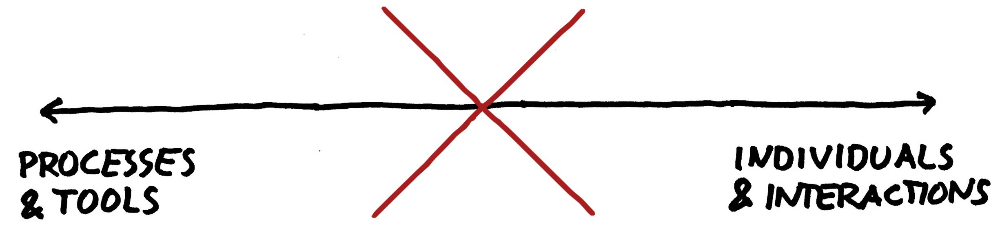

Processes and tools are not enemies of Agile

Whenever a group of agilists meet, it seems to be only a matter of time before someone points out that “doing agile is not enough, we need to be agile”.
Hard to argue with that! Agile practices alone will not make us agile. Simply going through the motions of “doing agile” won’t deliver the outcomes we’re after. However, it worries me sometimes that the pendulum may be swinging too far. Searching for better processes and tools is almost seen as anti-agile. “You should focus on the mindset, not worry about the tools!”.
I think it’s just as important to flip the statement around:
An agile mindset is necessary but not enough! It’s our everyday actions that make us agile.

There is no continuum with “Individuals and interactions” on one side and “Processes and tools” on the other. You can’t choose one over the other. Outcomes require action!
Agile is not about getting rid of all processes and tools. It’s about choosing the right ones, the ones that help you achieve what you want to achieve. And then keep looking for even better ways of doing things.
Processes and tools are awesome!
In its simplest form, a process is just an agreed way of doing things. A good process helps you understand what is expected from you – and help others understand what you expect from them. Working agreements, such as the Definition of Done or the entry and exit criteria on a Kanban board, are not only helpful in guiding you what you need to do. They also reduce the risk of surprises further down the line. “Oh, I thought this feature had been tested?”…
… but which ones?
It’s impossible for me or anyone else to say which processes and tools are right for your team. What’s been working for me in the past won’t necessarily work for you. Every team, product and organisation is different.
There are however some characteristics good processes and tools are likely to display:
-
Owned by the team, not mandated from above. Every team and their context is different. There is no such thing as “best practice”. Teams are best placed to understand their own needs! Sometimes, when working together with other teams, it will help to agree on certain things between teams. Again, that’s best sorted out between the teams themselves.
-
Encouraging collaboration. As we value individuals and interactions, the processes and tools we choose need to help those individuals and interactions to thrive. Often, the conversations that happen as part of a process are much more valuable than whatever output the process generates!
-
Simple and lightweight. Processes can often be unnecessarily heavy or bureaucratic. Often, they even keep getting added to over time. Instead, ask yourself whether there are any steps that could be removed or be done in a simpler way? And if a tool requires someone to spend considerable time maintaining the tool itself or the information in it, simpler options are probably available!
-
Revisited regularly. Just because something was working great at one point – or wasn’t big enough a problem to worry about – doesn’t mean it will always be that way. Things change over time and you also learn more, enabling you to come up with better and better solutions. It’s when teams keep experimenting with their process they will find the ways of working that work best for their particular conditions.
-
Spread virally. When the team are in charge of their own process, no one can tell them “Do x!”. Instead, good practices spread through people sharing their experiences with each other. “Here’s something we’ve tried and it worked for us. Try it if you like!”.
Finding the right ones
So how can you find the processes and tools that work for you? Through following an agile approach!
-
Understand what you are trying to achieve. What outcome are you hoping to achieve, e.g. quicker releases, fewer bugs in production or less rework? How will you know you’ve achieved the desired result?
-
Consider what options you have. What things have people on the team tried before? Also, read and listen to what others outside the team have tried in a similar situation. However, don’t take anyone’s word that a particular solution will solve your problems. Just because it worked in their context doesn’t mean it will work in yours!
-
Experiment! Choose what seems to be a good option and try it. Do you get the result you were hoping for? Why/why not? What improvements could you make? Or should you try something else?
Let’s share with each other!
Finally, when you have found something that works or doesn’t, share your insights with others. They could use some good ideas, just like you! As a community, it’s through building on each other’s ideas and experiences we can truly make a difference!
♻️ I republished this blog post here 22 November 2019 with minimal changes. The date below is when it was originally published on my old blog.
Back to blog

This work by Magnus Dahlgren is licensed under a Creative Commons Attribution 4.0 International License.